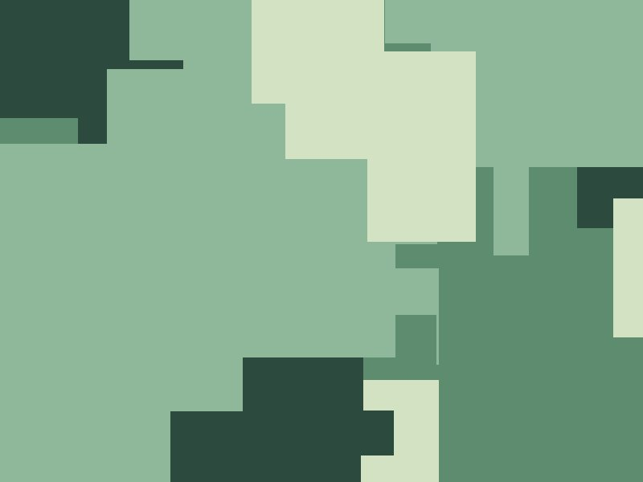

Jamal Okafor makes objects that ask questions about labor, lineage, and land. His sculptures combine welded steel with hand-pulled relief prints on fabric, creating forms that feel both industrial and intimate.
A graduate of the University of Oregon and a longtime member of the Portland Print Studio cooperative, Jamal has exhibited at PICA, Disjecta, and the Portland Art Museum's APEX series. In 2024 he completed a public art commission for the City of Portland centered on the history of Black-owned businesses on Williams Avenue.
Jamal teaches printmaking workshops at CommUnity PDX and is a founding member of the Portland Print Fair. He is currently developing a long-term project documenting the working tools of Black craftspeople in the Pacific Northwest.

